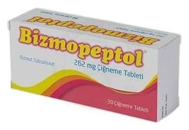

Bizmopeptol 262 mg Çiğneme Tableti, 30 Adet

Ne için kullanılır
KT · Bölüm 1BİZMOPEPTOL, kırmızımsı pembe renkli, bir yüzü düz, diğer yüzü çentikli, oblong çiğneme tabletidir. Her bir tablet, 262 mg bizmut subsalisilat içerir. BİZMOPEPTOL, 30 adet tablet içeren blister ambalajda sunulmaktadır. BİZMOPEPTOL, ishalde ve aynı zamanda seyahat ishaline karşı koruyucu olarak kullanılan bir bizmut bileşiğidir. Mide ile on iki parmak bağırsağında ülseri olan kişilerde ülser oluşumundan sorumlu tutulan bir çeşit bakteri olan H. pylori’nin yok edilmesi amacıyla uygulanan tedavi rejiminin bir parçası olarak kullanılır.